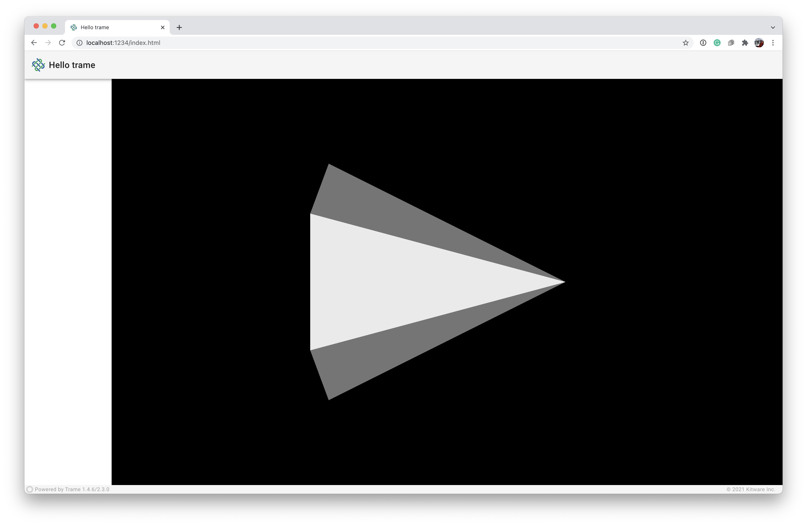

Layouts
To simplify creation of the graphical user interface (GUI) for the web application, trame defines layouts such as FullScreenPage, SinglePage, and SinglePageWithDrawer.
All core layouts start with a VApp (Vuetifies v-app) component. The VApp is REQUIRED for all applications. It is the mount point for other Vuetify components and functionality and ensures that it propagates the default application variant (dark/light) to children components while ensuring proper cross-browser support for certain click events in browsers like Safari. VApp should only be rendered within your application ONCE.
More on Vuetify in the next chapter of the tutorial.
Each of these layouts can be utilized by importing, instantiating, and serving it via its start function.
FullScreenPage
If you want to experiement with it you can edit 02_layouts/app_cone.py which was the latest cone example we built using the SinglePage layout.
The FullScreenPage layout starts with VApp and exposes the children array where one could add in other desired HTML elements (Vuetify UI Components).

First, add the import to FullScreenPage.
from trame.layouts import FullScreenPage |
Second, we instantiate the layout object, create the vtk.VtkLocalView component, and add it directly to the VApp‘s children using a Vuetify VContainer with arguments descripted in the VTK chapter.
html_view = vtk.VtkLocalView(renderWindow) |
Finally, we call start on the layout directly
if __name__ == "__main__": |
The FullScreenPage is really a blank canvas to add your desired Vuetify components.
Running the Application
python 02_layouts/app_cone.py --port 1234 |
SinglePage
The SinglePage extends the FullScreenPage with a few predifined components such as logo, title, toolbar, content, and footer.

The logo and title sit on the left-hand side of the toolbar and customized as necessary. The logo accepts an 32x32 image or an VIcon such as those found at Material Design Icons. The toolbar itself exposes its children array where one can add components as needed. The footer can be hidden, but currently has trame branding and the progress bar. The content has a children array to which you may add your desired Vuetify components.
First, we import the SinglePage class.
from trame.layouts import SinglePage |
Second, we instantiate the layout object, maybe change the title, create the vtk.VtkLocalView component, and add it to the content component’s children using a Vuetify VContainer with arguments descripted in the VTK chapter.
html_view = vtk.VtkLocalView(renderWindow) |
Finally, we serve the layout via the start function.
if __name__ == "__main__": |
Running the Application
python 02_layouts/app_cone.py --port 1234 |
SinglePageWithDrawer
The SinglePageWithDrawer extends the SinglePage with a drawer. You can show and hide the drawer by clicking on the application logo on the toolbar. The drawer has a children array to which you may add necessary Vuetify components.

First, we import the SinglePageWithDrawer class.
from trame.layouts import SinglePageWithDrawer |
Second, we instantiate the layout object with access to everything within the SinglePage layout.
html_view = vtk.VtkLocalView(renderWindow) |
Finally, we serve the layout via the start function.
if __name__ == "__main__": |
Running the Application
python 02_layouts/app_cone.py --port 1234 |